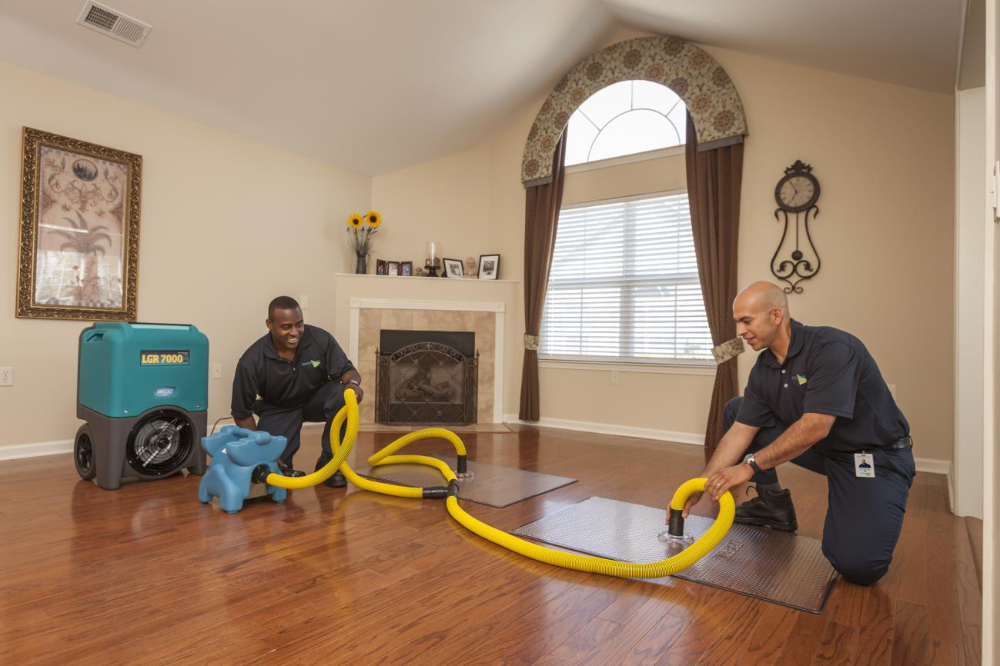
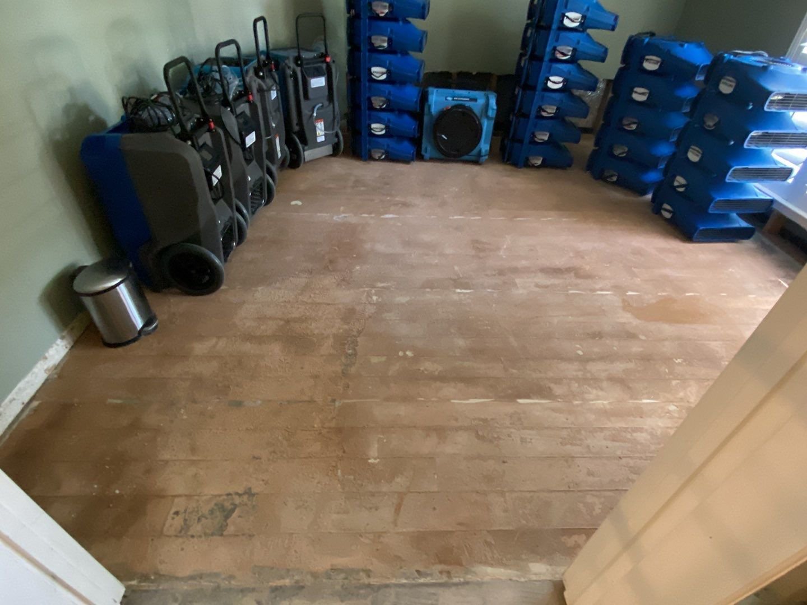
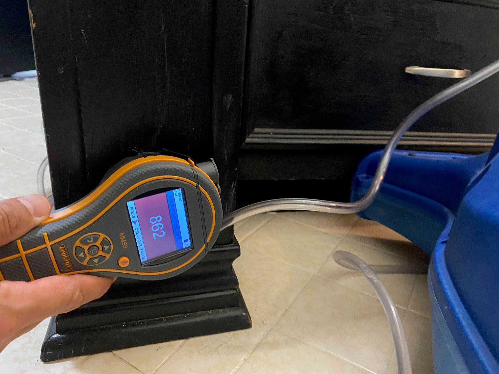
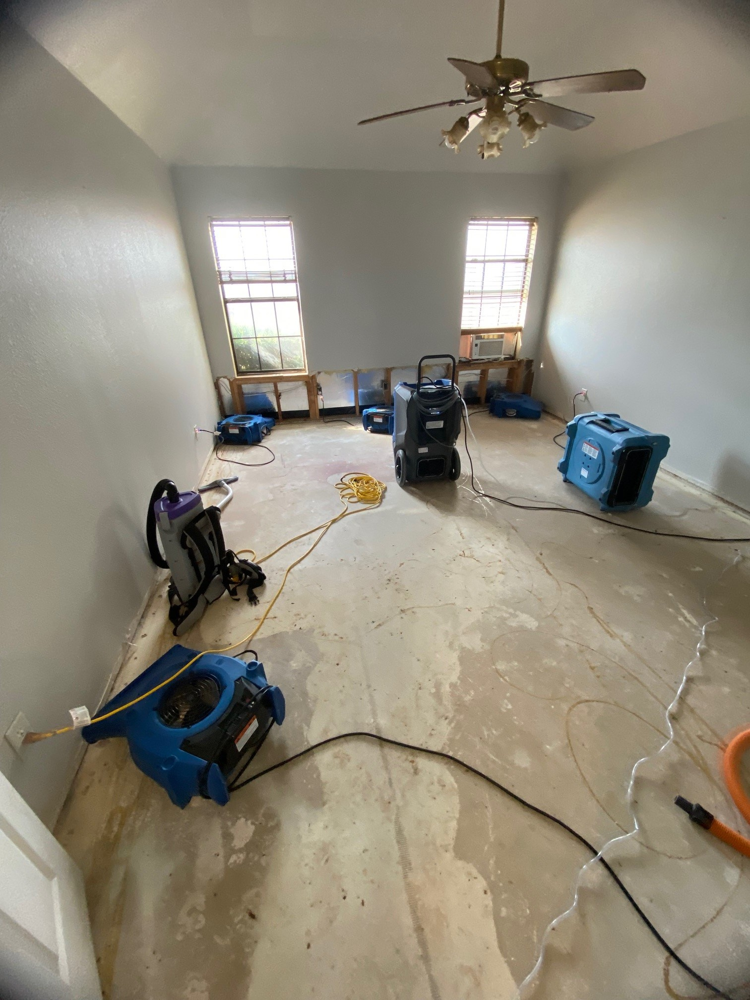
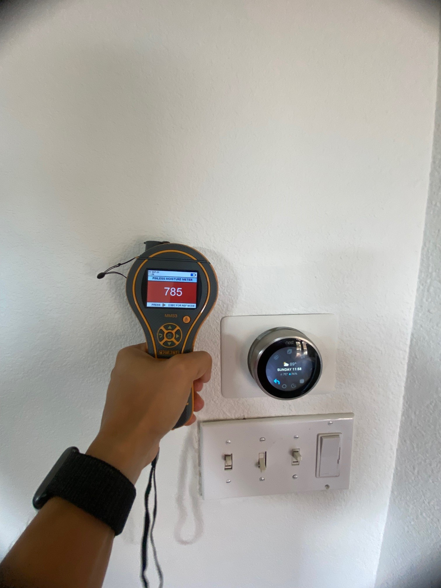

Water Damage Restoration, Fire Cleanup and Reconstruction services
in Plano, TX
Intensa Dry delivers exceptional water and fire damage restoration and reconstruction services in Plano, TX. Our expert team ensures fast, reliable, and thorough recovery for your property.
When water damage strikes, you need a reliable partner to act quickly and effectively. Intensa Dry, a leading water damage restoration company in Plano, TX, offers comprehensive water damage cleanup, mitigation, and restoration services to return your property to its pre-damage condition. Our skilled team specializes in emergency water extraction, structural drying, and repair. We also handle mold remediation and odor removal to ensure your home or business is fully restored to a safe and healthy environment.
We understand that water damage can disrupt your daily life and cause significant stress. That's why we provide 24/7 emergency response services to address issues as soon as they arise. Our certified technicians use state of the art equipment and techniques to efficiently manage water damage, prevent further complications, and expedite the restoration process. From initial assessment and documentation for insurance claims to complete reconstruction, we are committed to delivering high quality, reliable service throughout every step of the restoration.
Trust Intensa Dry to manage your water damage repair and restoration needs with expertise and care. Our goal is to help you recover swiftly and seamlessly, ensuring your property is restored to its optimal condition.
Intensa Dry for Water Damage Consultation
(972) 439-0229
Certified and Insured professionals
Local and family owned
Reliable and customer oriented
Fire Damage Restoration Services in Plano, TX
Dealing with fire damage requires swift and expert action. Intensa Dry in Plano, TX, offers comprehensive fire damage restoration services, including smoke damage repair, soot removal, structural repairs, and odor elimination. Our team is available 24/7 for emergency fire cleanup, ensuring rapid and effective restoration. We also handle insurance claims, providing detailed documentation and expert guidance throughout the process. Trust Intensa Dry to manage all aspects of fire damage repair and restoration, restoring your property to its pre-fire condition.
Intensa Dry for Fire Damage Restoration
(972) 439-0229
24/7 Emergency Response
Comprehensive Restoration Plan
Customer-Centric Approach
Your Emergency Deserves Immediate Attention - Call Now!
Reconstruction Services in Plano, TX
When disaster strikes, expert reconstruction is essential to restore your property. Intensa Dry offers comprehensive reconstruction services in Plano, TX, to rebuild and repair your home or business to its original condition. Our skilled team handles everything from structural repairs to finishing touches, ensuring high quality craftsmanship and attention to detail. Whether you're dealing with damage from fire, water, or other events, trust Intensa Dry to manage your reconstruction needs with efficiency and care.
Delivering top quality reconstruction results
Creative Reconstruction
Customer Satisfaction
Why choose Us
Reasons why you should choose us
Free moisture inspection
60 Min Response Time
Industry Certified
Local and family owned
State-Of-The-Art Equipment
Safe EPA Approved Treatment Solutions
Licensed & Insured
Water Damage Cleanup and Mitigation
Water damage cleanup and mitigation service: swift response, moisture removal, restoration, and mold prevention. Protect your property.
About one in 55 insured homes has a property damage claim caused by water damage each year. Untimely reporting can jeopardize coverage for your water loss. The most important aspect is to mitigate the property damage. As the policy holder, this is your responsibility. Moreover, your insurance company will validate that you did your part in minimizing the damage by calling a professional water damage company.
We have the knowledge and experience in working with your insurance carrier. Call the best water damage remediation company that works with all insurance companies!
Your Emergency Is Our Priority! Contact Us Anytime!
Our Recent Projects
We have worked with several water damage restoration projects along with some reconstruction projects in North that we listed below:





Call us
Give us a call and take the first step towards a restored and safer property
Arrival
Give us a call and take the first step towards a restored and safer property
Inspection
Give us a call and take the first step towards a restored and safer property
Starting Work
Give us a call and take the first step towards a restored and safer property
CONTACT US
Get a Fast Response, Call Us Now
You can count on us to get the job done right at a price that is right. Water and flood damages can be a significant emergency; therefore, we offer 24 hours 7 days a week emergency service.